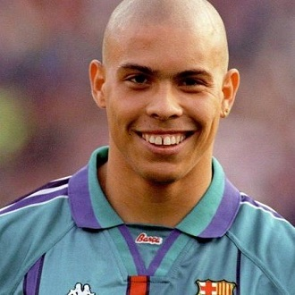

-
Lionel Messi
Descrição
Considerado pela grande maioria o maior de todos os tempos, Lionel Messi, nascido em 24 de junho de 1987 em Rosário, Argentina, é amplamente considerado um dos maiores jogadores de futebol de todos os tempos. Ele começou sua carreira no Newell's Old Boys antes de se transferir para o Barcelona aos 13 anos. No Barcelona, Messi conquistou inúmeros títulos, incluindo 10 campeonatos da La Liga, 4 Liga dos Campeões da UEFA e 7 Copas do Rei. Ele também ganhou a Bola de Ouro, prêmio dado ao melhor jogador do mundo, diversas vezes. Em 2021, Messi transferiu-se para o Paris Saint-Germain (PSG) devido a dificuldades financeiras do Barcelona. Além de sua carreira de clubes, Messi tem sido uma figura chave na seleção argentina, ajudando a equipe a vencer a Copa América em 2021 e a Copa do Mundo FIFA em 2022, onde foi eleito o melhor jogador do torneio. Conhecido por suas habilidades excepcionais com a bola, velocidade, visão de jogo e capacidade de marcar gols, Messi é admirado por fãs de futebol em todo o mundo. Sua carreira é marcada por recordes e conquistas que solidificam seu legado no esporte.
-
Pelé
Descrição
Edson Arantes do Nascimento, mais conhecido como Pelé (e também por "Rei do Futebol") em 23 de outubro de 1940 em Três Corações, Brasil, é considerado um dos maiores jogadores de futebol de todos os tempos. Ele iniciou sua carreira no Santos Futebol Clube aos 15 anos, onde jogou a maior parte de sua carreira e conquistou inúmeros títulos, incluindo 6 Campeonatos Brasileiros e 2 Copas Libertadores. Pelé é o único jogador a ter vencido a Copa do Mundo três vezes (1958, 1962 e 1970) com a seleção brasileira. Ele é conhecido por sua incrível habilidade técnica, visão de jogo, capacidade de finalização e carisma dentro e fora dos campos. Durante sua carreira, Pelé marcou mais de 1.000 gols, um feito raro no futebol profissional. Depois de deixar o Santos, Pelé jogou pelo New York Cosmos, ajudando a popularizar o futebol nos Estados Unidos. Ele se aposentou em 1977, mas continuou a ser uma figura influente no esporte, atuando como embaixador do futebol mundial. Pelé é uma lenda do esporte, não apenas por suas conquistas e habilidades em campo, mas também por seu impacto cultural e legado duradouro no futebol mundial.
-
Maradona
Descrição
Diego Maradona, nascido em 30 de outubro de 1960 em Lanús, Argentina, é amplamente considerado um dos maiores jogadores de futebol de todos os tempos. Ele começou sua carreira profissional no Argentinos Juniors antes de se transferir para o Boca Juniors, onde rapidamente se tornou uma estrela. Maradona também jogou pelo Barcelona e teve um impacto significativo no Napoli, levando o clube a conquistar dois títulos da Série A italiana e uma Copa da UEFA. Maradona é mais famoso por seu desempenho na Copa do Mundo de 1986, onde liderou a Argentina ao título. Nesse torneio, ele marcou dois dos gols mais icônicos da história do futebol contra a Inglaterra: o "Gol da Mão de Deus" e o "Gol do Século", onde driblou metade do time adversário. Conhecido por sua habilidade extraordinária com a bola, dribles impressionantes e visão de jogo, Maradona era uma figura carismática e muitas vezes controversa, tanto dentro quanto fora do campo. Sua carreira também foi marcada por lutas pessoais, incluindo problemas com drogas e saúde. Maradona faleceu em 25 de novembro de 2020, mas seu legado como um dos maiores talentos do futebol mundial permanece inabalável. Ele é reverenciado por fãs de futebol ao redor do mundo e continua a ser uma figura icônica na história do esporte.
-
Cristiano Ronaldo
Descrição
Cristiano Ronaldo, nascido em 5 de fevereiro de 1985 em Funchal, Madeira, Portugal, é considerado um dos maiores jogadores de futebol de todos os tempos. Ele começou sua carreira profissional no Sporting de Lisboa antes de se transferir para o Manchester United em 2003, onde ganhou três títulos da Premier League e a Liga dos Campeões da UEFA. Em 2009, Ronaldo se transferiu para o Real Madrid por uma taxa recorde na época. No Real Madrid, ele alcançou um sucesso extraordinário, conquistando quatro Liga dos Campeões da UEFA, dois títulos da La Liga e se tornando o maior artilheiro da história do clube. Em 2018, ele se transferiu para a Juventus, onde continuou a vencer títulos, incluindo duas Séries A italianas. Ronaldo também é uma figura chave na seleção portuguesa, ajudando o time a vencer a Eurocopa em 2016 e a Liga das Nações da UEFA em 2019. Ele é conhecido por sua velocidade, força, capacidade de finalização e profissionalismo. Ao longo de sua carreira, Ronaldo recebeu inúmeros prêmios individuais, incluindo várias Bolas de Ouro, e quebrou inúmeros recordes de gols. Em 2021, ele retornou ao Manchester United antes de se transferir para o Al Nassr da Arábia Saudita em 2022 e posteriormente para o Al-Ittihad. Cristiano Ronaldo é admirado por sua dedicação, ética de trabalho e longevidade no esporte, mantendo-se em alto nível competitivo ao longo de sua carreira. Seu impacto no futebol global é inegável, e ele é uma das figuras mais reconhecidas e influentes do esporte.
-
Ronaldo Fenômeno
Descrição
Ronaldo Luís Nazário de Lima, conhecido como Ronaldo Fenômeno, nasceu em 18 de setembro de 1976 no Rio de Janeiro, Brasil. Ele é amplamente considerado um dos maiores jogadores de futebol de todos os tempos. Ronaldo iniciou sua carreira no Cruzeiro antes de se transferir para o PSV Eindhoven na Holanda, onde rapidamente se destacou. Ele jogou por alguns dos maiores clubes do mundo, incluindo Barcelona, Inter de Milão, Real Madrid e Milan. Conhecido por sua velocidade, habilidade de drible, precisão nos chutes e capacidade de marcar gols, Ronaldo ganhou diversos títulos de ligas e competições europeias. Ronaldo foi uma figura central na seleção brasileira, ajudando o Brasil a vencer duas Copas do Mundo (1994 e 2002). Na Copa do Mundo de 2002, ele foi o artilheiro do torneio, marcando 8 gols, incluindo 2 na final contra a Alemanha. Ele também ganhou duas Bolas de Ouro (1997 e 2002) e três prêmios de Melhor Jogador do Mundo da FIFA. Apesar de sofrer com lesões graves ao longo de sua carreira, Ronaldo demonstrou uma capacidade notável de recuperação e continuou a jogar em alto nível. Ele se aposentou em 2011, mas continua a ser uma figura influente no mundo do futebol. Ronaldo Fenômeno é lembrado por sua habilidade extraordinária e impacto duradouro no esporte, sendo uma lenda tanto no futebol de clubes quanto no cenário internacional.